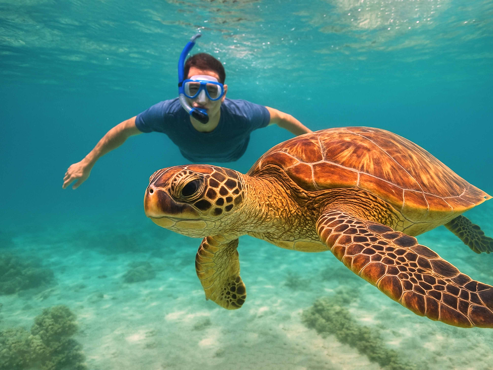
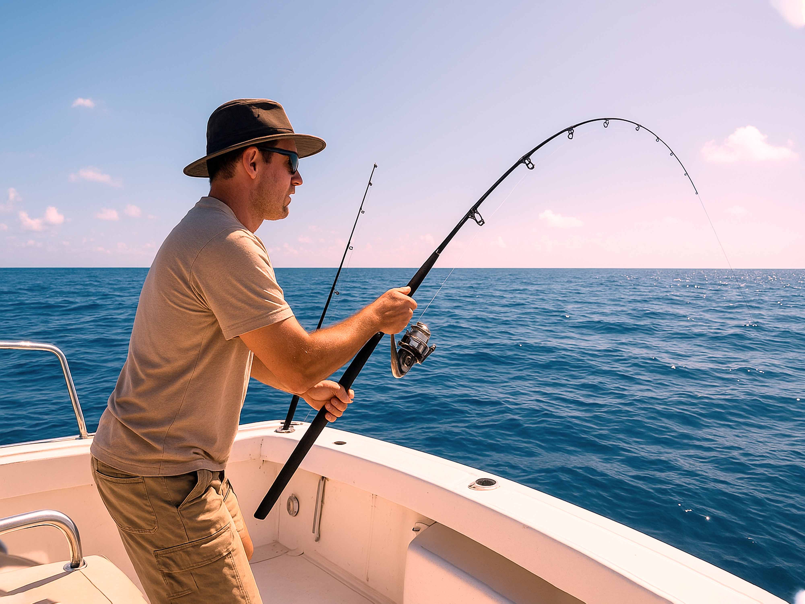
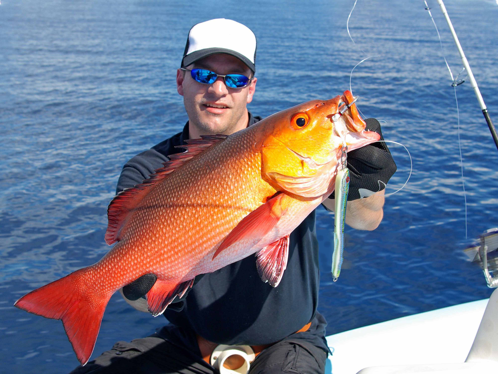

Swim with friendly sea turtles and explore Mirissa’s colorful reefs with our guided snorkeling experience.

Experience the thrill of catching big game fish in the deep waters off Mirissa.

Enjoy a calm fishing trip closer to shore — ideal for beginners and families.